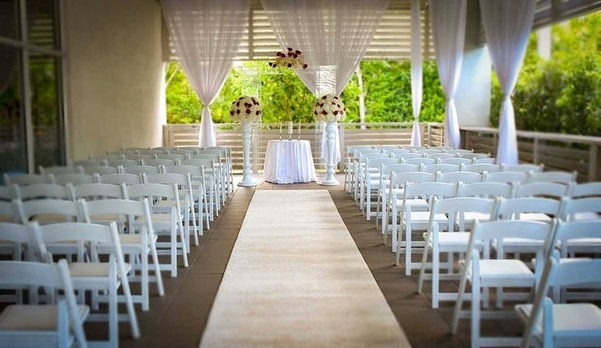
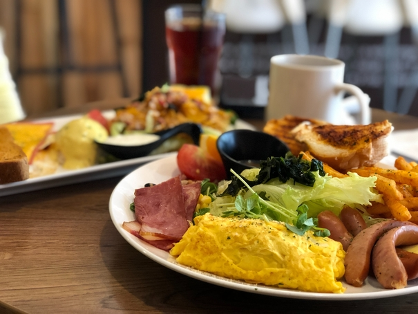

Our specialized services include:
Free access to changing rooms and bathroom facilities for temple patrons who have traveled far and need to change to and from church clothes
Long term stay accommodations in kitchenette suites for full-time temple missionaries
A temple history themed reception and sitting area.
A wedding reception hall that can be easily customized with a simple catering menu and kitchen access for food preparation and serving.
A business center that supports family search and ordinance work
Some of the free amenities include:
Breakfast
Exercise/workout room
Indoor pool
Wi-Fi high-speed internet access and smart tvs
Parking
Family history consultation and ordinance card services
Full-Time Missionaries
Temple Inn & Suites provides the event room and catering services every wednesday morning for the missionaries meetings.